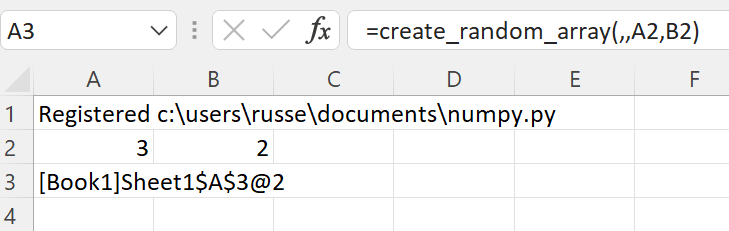
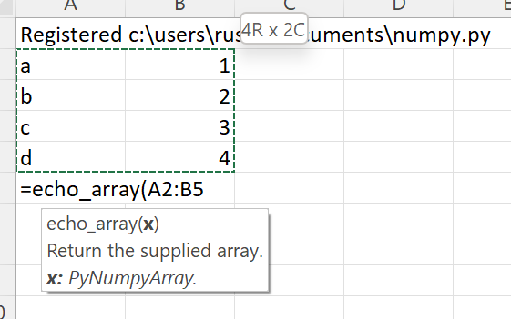
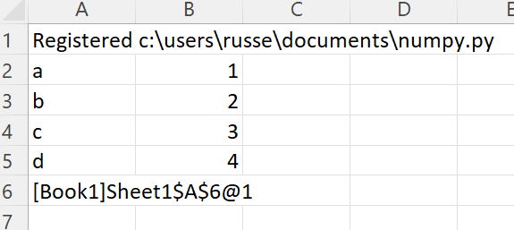
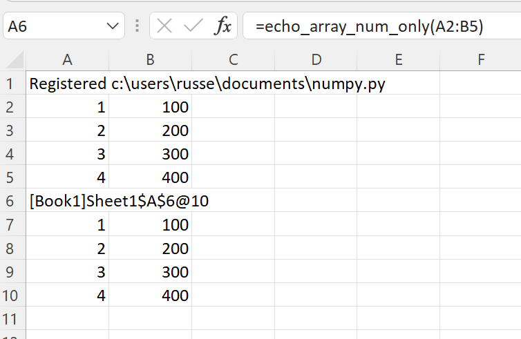
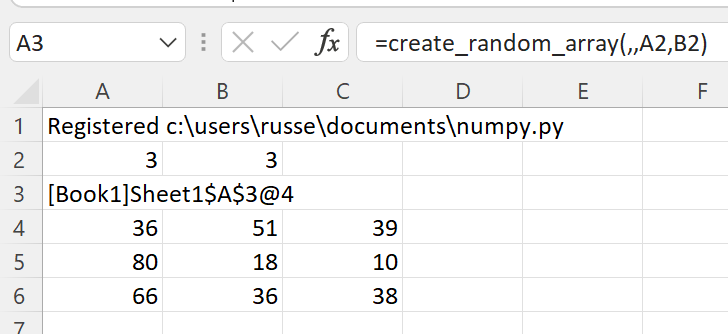
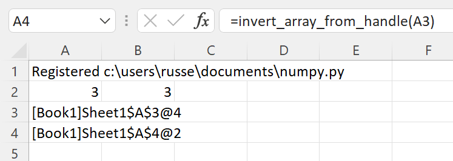
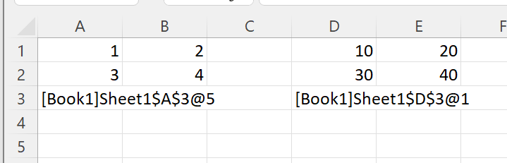

numpy Arrays¶
xlSlim was designed to support numpy arrays efficiently while keeping the interaction with Excel as intuitive as possible.
Note
Type hints are essential for xlSlim to recognise numpy arrays passed between your functions.
Creating numpy arrays¶
- numpy arrays can be created in three ways:
- within a Python function
- from an Excel range
- from an Excel range of numbers (optimised)
numpy Array from a Python function¶
This Python code defines a function create_random_array() that returns a numpy array of random numbers.
import numpy as np
def create_random_array(
minimum: int = 0, maximum: int = 100, rows: int = 1, columns: int = 1
) -> np.ndarray:
"""Create a matrix of random integers between minimum and maximum with x rows and y columns."""
return np.random.randint(minimum, maximum, size=(rows, columns))
Note
All the Python code and Excel files shown are available from github in the xlslim-code-samples repo. I highly recommend downloading the samples from github. The Excel workbooks contain many tips and tricks.
Save the Python code as a new file on your PC. I saved the file in my Documents folder.
Open Excel and enter this RegisterPyModule() formula (amending the location to match where you saved the file):
=RegisterPyModule("c:\users\russe\documents\numpy.py","C:\Users\russe\anaconda3\envs\py37")
Note
numpy is not available in the Python installation bundled with xlSlim. The Python module must be registered with an existing Python installation that has numpy installed.
If we call the create_random_array() function we see that the result is automatically cached and a cache handle is returned to Excel.
{kind=link}
The xlSlim function ViewPyObject() can be used to view any Python object stored in the memory cache.
=ViewPyObject(A3)
{kind=link}
numpy Array from an Excel Range¶
Any Excel range can be used to create a numpy array.
Add this echo_array() function to the Python code and re-register the module with RegisterPyModule()
def echo_array(x: np.ndarray) -> np.ndarray:
"""Return the supplied array."""
return x
This function simply returns the numpy array passed in, we’ll use it to show how xlSlim creates numpy arrays directly from Excel if the Python function has a type hint for np.ndarray.
We create a table of strings and numbers in Excel and pass this to the echo_array() function.
{kind=link}
The function returns a cached object handle to Excel.
{kind=link}
A few things have happened here. xlSlim created a numpy array from the range A2:B5 before passing the data to the Python code. The Python code received a regular numpy array as expected. The Python function echo_array() then returned the same numpy array. xlSlim automatically put this numpy array into a memory cache and returned the cache handle to Excel.
Using ViewPyObject() we can see the array has been created and passed around as expected.
{kind=link}
numpy Array from an Excel Range of numbers¶
xlSlim is optimised to create numpy arrays from Excel ranges of numbers. Ranges of numbers are converted to numpy arrays very efficiently with only direct memory copies being used.
xlSlim cannot determine if the Excel range passed in only contains numbers (Technically it could but this would be very slow). Therefore xlSlim creates a special version of every Python function that expects one or more numpy arrays - these special functions have the same names with “_num_only” appended.
Let’s create a range of numbers and try the echo_array_num_only() function.
{kind=link}
The function echo_array_num_only() behaves exactly the same as echo_array() however it is far more efficient when passing in a range of numbers.
Note
For optimal performance always use the “_num_only” versions of xlSlim functions when creating numeric numpy arrays from Excel Ranges.
Passing numpy arrays to Python functions¶
As shown above, numpy arrays can be created from Excel Ranges. xlSlim will create a numpy array from an Excel Range before passing the numpy array to the Python function.
Another way to pass numpy arrays is to use the cache object handles corresponding to numpy arrays in xlSlim’s memory cache.
Add this invert_array() function to the Python code and re-register the module with RegisterPyModule()
from numpy.linalg import inv
def invert_array(x: np.ndarray) -> np.ndarray:
"""Compute the (multiplicative) inverse of a matrix."""
return inv(x)
Let’s create a square array using the create_random_array() function we defined before.
{kind=link}
The ViewPyObject() in A4 shows the array.
Remove the ViewPyObject() function and replace it with the invert_array_from_handle() function
=invert_array_from_handle(A3)
This takes in the cache object handle from A3, gets the associated numpy array from xlSlim’s memory cache, passes the numpy array to the invert_array() Python function, and finally stores the result in the memory cache passing a cache object handle back to Excel.
{kind=link}
The new, inverted array can be viewed with ViewPyObject() as usual.
{kind=link}
Note
Passing numpy arrays using cache object handles is much more efficient than creating numpy arrays from Excel Ranges.
Passing multiple numpy arrays to Python functions¶
- Multiple numpy arrays can be passed to Python functions in two ways:
- As separate arguments as shown in the add_two_arrays() function below
- As a list of numpy arrays as shown in the multiply_arrays() function below
from typing import List
def add_two_arrays(a: np.ndarray, b: np.ndarray) -> np.ndarray:
"""Add two arrays."""
return a + b
def multiply_arrays(arrays: List[np.ndarray]) -> np.ndarray:
"""Multiply the supplied arrays."""
s = None
for a in arrays:
if s is not None:
s *= a
else:
s = a
return s
Given this sheet, where the data is in A1:B2 and D1:E2 with cache object handles for each array below in A3 and D3:
{kind=link}
For the first case, functions with separate arguments, any of the techniques discussed so far can be use. These are all valid
=add_two_arrays(A1:B2,D1:E2)
=add_two_arrays_num_only(A1:B2,D1:E2)
=add_two_arrays_from_handle(A3,D3)
However for the second case, functions expecting a list, only a list of cache object handles can be supplied.
=multiply_arrays(CreateRange(A3,D3))
We use the CreateRange() utility function to create a range as A3 and D3 are not adjacent cells.